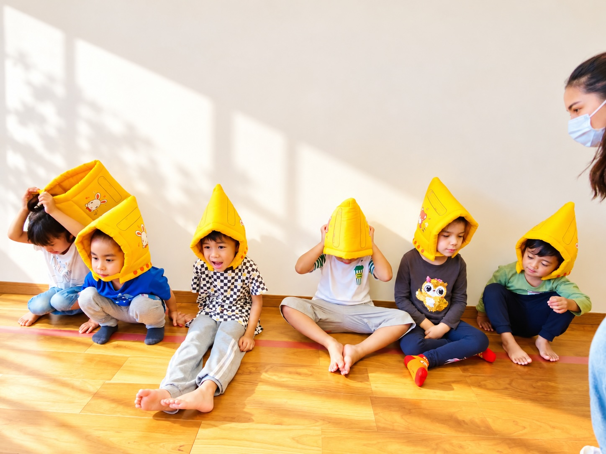

家族のような絆
職員・こども・保護者は「家族」。
お互いを思いやり、笑顔の絶えない環境を作ります。

かみのての保育
家族のような絆、誠実と感謝、多文化の尊重。
3つの価値観を、毎日の保育で大切にしています。
職員・こども・保護者は「家族」。
お互いを思いやり、笑顔の絶えない環境を作ります。
誰に対しても常に感謝し
誠実に、ていねいに向き合います。
「違い」は資産です。
多文化であることを活かした支援を行います。
職員・こども・保護者は「家族」。お互いを思いやり、協調性を持ってコミュニケーションを深めます。
笑顔の絶えない環境を作ります。
おうちでの様子↔
園での様子↔
誰に対しても、常に感謝し、誠実に、真摯に、丁寧な姿勢で向き合います。

「違い」は資産です。
多文化であることを活かし、バイアスのない地域特性を生かした支援を行います。
家庭で使うことばや、育つ環境のちがいを大切にします。
それぞれの文化や生活習慣を尊重します。
一人ひとりの発達のペースに寄り添います。
何でも食べられるよう給食を提供し、健康な体を育みます。
母語・母語文化を大切にしつつ、日本での生活に必要な習慣と日本語をサポートします。
たくさん褒めて、自分に自信と誇りを持てるこどもを育てます。
安心して過ごせる環境で、基本的な生活習慣を身につけます。